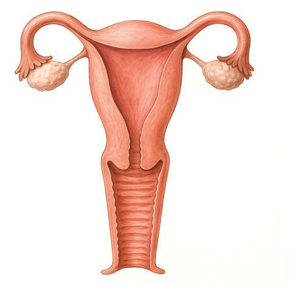

| No. | Structure | Description | Function(s) |
|---|---|---|---|
| 6 | Prostate gland | An organ located below the urinary bladder, surrounding the upper part of the urethra. | To produce a thick, slippery fluid that helps to protect and aid sperm movement. |
| 7 | Cowper’s gland | A pea-sized gland located below the prostate gland | To produce a lubricating fluid that helps to neutralise acidity in the urethra, preparing it for the passage of sperm. |
Female reproductive system
The female reproductive system is a specialised system responsible for production of eggs, secretion of hormones and provision of an environment for fertilisation and foetal development. This system consists of four main parts, namely the ovaries, fallopian tubes, uterus and vagina. Figure 2 shows different parts of the female reproductive system.
Additionally, the female reproductive system is regulated by oestrogen and progesterone hormones. These hormones control the menstrual cycle, pregnancy, and childbirth.
Figure 2: Female reproductive system
Labelled female reproductive system diagram with seven leaders connecting each name to its structure.
